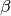
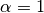
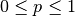

Epidemic Models¶
Introduction¶
Epidemiological models are implemented in the EpiGrass environment as a tool to predict, understand and develop strategies to control the spread of infectious diseases at different time/spatial scales. In this context, there are two direct potential applications. One is to model the spread of new diseases through an entirely susceptible population (ecological invasion). The velocity of spread of new diseases in a network of susceptible populations depends on their spatial distribution, size, susceptibility and patterns of contact. In a spatial scale, climate and environment may also impact the dynamics of geographical spread as it introduces temporal and spatial heterogeneity. Understanding and predicting the direction and velocity of an invasion wave is key for emergency preparedness.
Besides invasion, network epidemiological models can also be used to understand patterns of geographical spread of endemic diseases. Many infectious diseases can only be maintained in a endemic state in cities with population size above a threshold, or under appropriate environmental conditions (climate, availability of a reservoir, vectors, etc). The variables and the magnitudes associated with endemicity threshold depends on the natural history of the disease cite{MJKeelingandBTGrenfell1997}. Theses magnitudes may vary from place to place as it depends on the contact structure of the individuals. Predicting which cities are sources for the endemicity and understanding the path of recurrent traveling waves may help us to design optimal surveillance and control strategies. For measles, for example, models suggest that geographical spread tend to follow a hierarchical pattern, starting in big cities (core) and then spreading to smaller neighborhood cities (satellites) cite{BTGrenfellandONBjoernstadandJKappey2001}.
EpiGrass implements a series of epidemiological models which, integrated with a set of analytical and visualization tools, may give us clues about the overall pattern of diseases spread in the geographical space. Besides, it can be used for scenario analysis to compare alternative intervention scenarios.
Disease models¶
Models of disease dynamics are quite diverse, ranging from caricatures to very detailed simulations. Traditional models of spread of diseases are based on the mean field assumption, i.e., that individuals interact randomly at a certain rate. Important references to the subject are cite{DiekmannOandHeesterbeekJAP2000,DaleyDJandGaniJandCanningsC2001,IshamVandMedleyG1996,AndersonRMandMayRMandAndersonB1992}. These models are expressed mathematically as difference equations (discrete time) or differential equations (continuous time). In the simplest form, these models do not take into consideration either individual heterogeneity or the local nature of transmission events. Increased realism is achieved by structuring the population according to age, risk behavior, sex, susceptibility, or other category associated with different risk of getting or transmitting the disease. Within each sub-population, however, the assumption of well mixing must hold. When other species are involved in the transmission process (non-human hosts and vectors), these are also considered as compartments that may be sub-divided as well according to covariates associated with the risk of acquiring or transmitting the disease.
In this context, epidemiological models take the form of multi-compartmental models where each compartment is a well-mixed homogeneous population. The model describes the transition of the individuals in this population through a sequence of disease-related stages. These stages could be Susceptible, Infected, Recovered, for example. And the transitions could be .. math:: Susceptible longrightarrow Infected .. math:: Infected longrightarrow Recovered
If only these transitions are allowed, then individuals in the recovered class never become susceptible again (lifelong immunity). If, on the other hand, immunity is only temporary (as in pertussis), then another transition should be included: .. math:: Susceptible longrightarrow Infected .. math:: Infected longrightarrow Recovered .. math:: Recovered longrightarrow Susceptible
One way to visualize these models is using state-flow diagrams, where boxes represent states (compartments) and arrows indicate the transitions. It is the state identity together with the transitions allowed that define the type of model in use.
Dispersal of infected individuals¶
A key feature of EpiGrass is to allow the simulation of geographical spread of infection from one locality to others. Dispersal of infection is modeled as in a ‘forest fire’ model cite{BTGrenfellandONBjoernstadandJKappey2001}. An infected individual, traveling to another city, acts as a spark that may trigger an epidemic in the new locality. This approach is based on the assumption that individuals commute between localities and contribute temporarily to the number of infected in the new locality, but not to its demography. Further details about this approach can be found in Grenfell et al (2001).
In all models presented below, new infections in locality  arise from the contact between Susceptibles in and Infectious individuals. Infectious individuals are of two types: those residents in
arise from the contact between Susceptibles in and Infectious individuals. Infectious individuals are of two types: those residents in  and those visiting . Mathematically, this is written as:
and those visiting . Mathematically, this is written as:
where is the number of new cases,  is the contact rate between Susceptibles and Infectious individuals, is the number of susceptibles, is the number of infectious individuals resident in the locality,  is the number of infectious individuals visiting the locality, is the population residing in the locality and is the total number of individuals visiting the locality.
is the number of infectious individuals visiting the locality, is the population residing in the locality and is the total number of individuals visiting the locality.  is a mixing parameter.
is a mixing parameter.  corresponds to homogeneous mixing (Finkenstadt and Grenfell, 2000).
corresponds to homogeneous mixing (Finkenstadt and Grenfell, 2000).
Typology of infectious diseases and corresponding models¶
Here we present a brief description of the typology of infectious diseases models based on the main route of transmission, and type of immunity resulting from infection. These models correspond to the types of models built into EpiGrass.
SIR-like models¶
The natural history of many directly transmitted infectious diseases can be appropriately described by a SIR-like model. SIR stands for Susceptible , Infected and Recovered . Archetypal SIRs are measles or chickenpox, i.e., diseases that confer lifelong immunity (but see cite{KGlassandBTGrenfell2004}). An individual starts his life in the  state and may progress to the
state and may progress to the  state. The rate of progression of individuals from to is called the incidence rate or force of infection which is a function of contact rate, probability of transmission per contact and density of infectious individuals. Individuals stay in the infectious period for a certain time and then move to the recovered state where they become immune to new infections. Generally, the removal rate from the infectious class is the inverse of the infectious period (i.e., it is assumed that the duration of infection is exponentially distributed).
state. The rate of progression of individuals from to is called the incidence rate or force of infection which is a function of contact rate, probability of transmission per contact and density of infectious individuals. Individuals stay in the infectious period for a certain time and then move to the recovered state where they become immune to new infections. Generally, the removal rate from the infectious class is the inverse of the infectious period (i.e., it is assumed that the duration of infection is exponentially distributed).

Figure: SIR-like models
Variations of this model allow cases where infected individuals do not acquire immunity after infection, thus returning to the susceptible pool (SIS model). Another variation is the inclusion of a latent stage to hold individuals that are infected but not infectious to others yet (incubation period). These are the SEIR (with immunity) and SEIS (no immunity) models.
Next, we describe in more detail each one of these models in their deterministic and stochastic versions, as used by EpiGrass.
| Symbol | Meaning |
|---|---|
| number of newly infected individuals at time | |
 |
number of exposed but not infectious individuals at time t |
|
number of infectious individuals at time t |
 |
number of recovered individuals at time t |
| contact rate () | |
|
number of infectious visitors |
|
mixing parameter ( means homogeneous mixing) |
 |
number of visitors |
 | population | population |
|
 | susceptible pool replenishment | susceptible pool replenishment |
|
 |
fraction of recovering from infection
per unit of time |
| fraction of becoming infectious per
unit of time |
|
 |
probability of acquiring immunity |
 |
probability of losing immunity |
 |
probability of recovered individual acquiring infection, given exposure |
- SIR models
- Examples of diseases represented by SIR models are measles, chickenpox. Some diseases that do not confer lifelong immunity may be represented by this model if only short term dynamics is of interest. In the scale of a year, influenza and pertussis, for example, could be described using SIR. The SIR model is implemented in EpiGrass as a system of four difference equations. Besides the three equations describing the dynamics of , and , a fourth equation explicitly defines the number of new cases per time step, (i.e., the incidence). In general, this quantity is embedded in the equation (prevalence), but it is important to keep track of the incidence if one wishes to compare prediction with notification data.
(1)
This model can be easily extended to include diseases without recovery, for example AIDS, the so called SI models. Basically, the recovery rate is set to 0.
- SIS models
In the SIS model, individuals do not acquire immunity after the infection. They return directly to the susceptible class.
The only difference between $SIS$ and $SIR$ models is the absence of $R$ and the flow of recovered individuals to the susceptible stage:
(2)
- SEIR models
- These models have an extra compartment for those individuals who have acquired the infection but are still not infectious to others. This is the latent period and it is often parameterized as the inverse of the incubation period. Note, however, that for many diseases, initiation of infectiousness does not necessarily coincides with symptoms. In principle, any disease described by the SIR model can also be described by the SEIR model. The decision regarding the use of one or another depends on the magnitude of the latent period in relation to the time frame of other events in the simulation. The model has the form:
(3)
- SEIS models
- These are SIS models with the inclusion of the latent stage.
(4)
SIpR-like models¶
These are SIR models with immunity intermediary between full (SIR) and null (SIS). Some possibilities arise here: 1) Infection confers full immunity to a fraction of the individuals and the remaining ones return to the susceptible class again, after infection. (SIpRpS); 2) Infection provides only partial immunity and recovered individuals are partially susceptible to new infection (SIpR); 3) Immunity is full right after infection but wanes with time (SIRS). Each model is presented below. Figure fig:sipr illustrates them diagrammatically.

SIpR-like models.
Related models, that included the latent state $E$ are: textit{SEIpRpS}, SEIpR, SEIRS.
- SIpRpS model
- This model assumes that a fraction $delta$ of infectious individuals acquire full immunity while the remaining $(1-delta)$ returns to the susceptible stage. The model is:
(5)
- SIpR model
- This model assumes that immunity is only partial and recovered individuals may acquire infection again (at a lower rate , where ). Two equations calculate the number of new infections. calculates the number of susceptibles that become infected at . calculates the number of recovered that become infected at . The latter are less susceptible to the disease when compared to susceptibles. The model is:
(6)
- SIRS model
- Here, the immunity acquired by infection wanes with time. Pertussis is an example of this dynamic.
(7)
SnInRn-like Models¶
These are models with more than one compartment for susceptibles, infected and recovered stages. They are used when infection involves more than one distinct populations. Vector borne diseases are classical examples where a SIR model is used to describe infection in humans and another SIR-like model is used to describe infection in the vector (and/or the reservoir(s)). Dengue fever and yellow fever are examples. Sexually transmitted diseases may also be modeled with SnInRn models if male and female populations are distinguished. These models can be define by the user as a custom model.
Stochastic models¶
All models described so far are deterministic. EpiGrass allows simulation of stochastic processes. This is done by assuming that is a random variable with expected value given by the expressions found in the deterministic models. The user may choose the probability distribution for between Poisson or Negative Binomial to draw realizations of :
or
The Poisson distribution assumes independent events while the negative Binomial assume clustering of transmission events.
Network transportation models¶
The transmission models describe the dynamics of infection in a well-mixed population. EpiGrass allows the user to model the movement of infectious individuals between well-mixed populations, thus simulating the spread of disease through space. EpiGrass represents geographical space as a network where cities or localities are nodes and transportation routes are edges. The term network refers to the framework of routes within a system of locations, identified as nodes or sites. An edge is a single link between two sites (a road, a railroad, an air route or a river/sea corridor).
Transportation networks, like many networks, are generally embodied as set of locations and a set of links representing connections between those locations. The arrangement and connectivity of a network is known as its topology. Major types of topology are illustrated in figure ref{fig:artgraphs}. Velocity and direction of disease spread depend on the topology and weight of the edges of the transport network and there are many properties of networks that may useful when analyzing the spread of diseases. EpiGrass calculates a set of these properties as described in chapter Analysis.
In a transportation network, each edge (or link) is characterized by a variable flow which states the number of passengers that travel through that link per unit time. EpiGrass uses this information to calculate the number of passengers arriving at each city, per time step. For example, consider node in figure A simple transportation network. At each time step, it receives 10 passengers from , 5 from , 1 from . Now suppose that, at this time step, 10% of the population within each site is infectious ( state), according to the epidemic model. Thus, a total of infectious individuals are visiting site . In the epidemic model embedded in , EpiGrass sets and . This calculation of is based on a deterministic argument. The other possibility, allowed by Epigrass, is to define as a random variable, that follows a binomial distribution with parameters ,:math:p, where is as given in the deterministic version and is the proportion of infectious individuals in the source population. From version 1.4 on, EpiGrass can also take into account the specific delays of each connection. When the average speed of the transportation system is set to a value greater than zero, epigrass calculates the time required to complete each trip and attributes this delay (in units of time) to the parameter . So, the number of infectious passengers arriving at any given city, at time  corresponds to the number of infectious passengers that left the city of origin at time .
corresponds to the number of infectious passengers that left the city of origin at time .
Deterministic:
Stochastic:

A simple transportation network